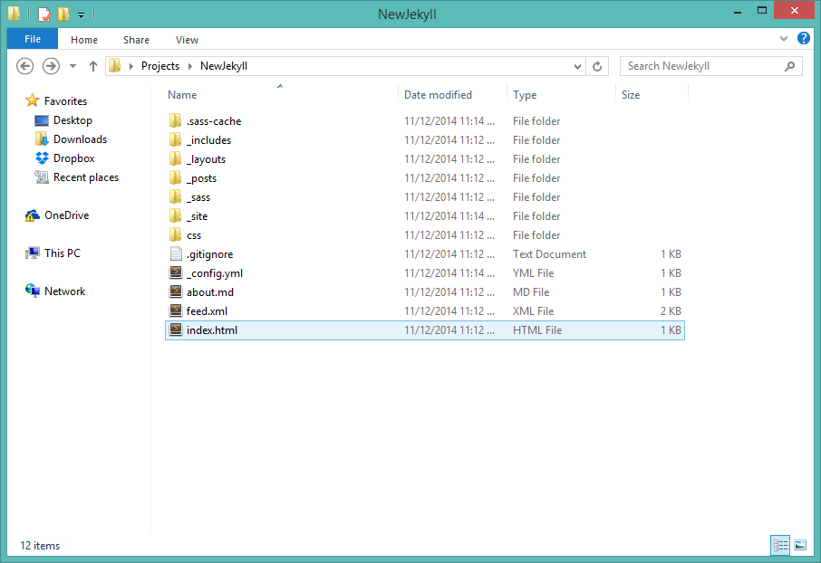
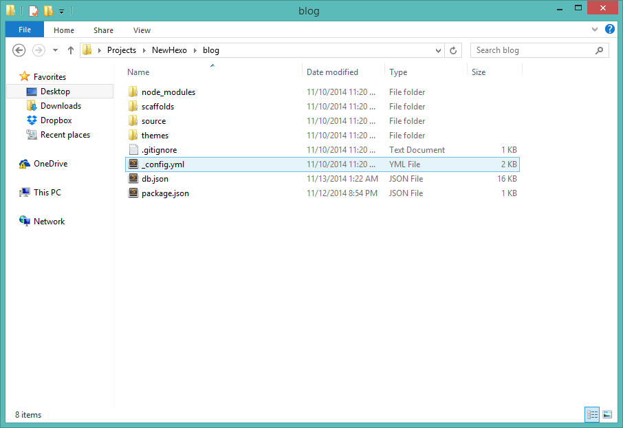

A Thing or Two About Static Site Generators
by Steve Waters
@stevenwaters86
Sharing my Twitter handle here because it seems like the thing to do these days
A Static Site Generator is a program that takes content written in Markdown (or other formats) and converts it to HTML. The HTML is also generated using templates.
This means you don't have to create an HTML file for each of your posts and handcode the header,footer, etc for it
Low Cost Hosting and Templating
- Host on GitHub Pages, Amazon S3, or even on DropBox.
- or maybe on a Rasberry Pi?
- Build from scratch easily
- The syntax behind each of the different templating engines are easy to understand
My site uses Hexo
but I will also mention Jekyll in my slides too...
Why I chose a Static Site Generator for my site...
I had a vision for how I wanted to build my site before I knew what a Static Site Generator was.
I started designing a new theme for Wordpress
I started designing a new theme for Wordpress
I wanted something simple
like really simple
- I was envisioning using all front-end techonologies for it
- Using JSON Files to store configuration, posts, metadata, and other content
- Use JavaScript for everything!
- I was thinking about how the back-end could be secure?
- Previous web hosting = bad
- I didn't want to deal with back-end coding
- I only wanted to deal with front-end technologies
- I didn't want to design a new theme from scratch by using the Wordpress theme that I made specifically for that purpose....yeah
I stumbled on one called Jekyll and I was like "hmm, this looks famliar...."
It looked famliar beacuse I remember seeing the logo before...
And then I vaguely remembered a friend epxlaining what Jekyll was at this year's Front-End Design Conference.
She was saying all these buzzwords like "Jekyll, Hyde, YAML, Front Matter, Liquid Templating, etc" and I was like...
Wha...
Installing, Template Building, Publishing Process
First
You install all the dependencies aka the languages/tools you need to run Static Site Generator scripts
Installing Jekyll
Install Ruby (for Windows Users) - http://rubyinstaller.org/
Install Ruby Dev Tools
ruby dk.rb init
ruby dk.rb install
gem install jekyll
Installing Hexo
Install Node.js (for all platforms!) - http://nodejs.org/
Install Node Package Manager (NPM)
Install Git
curl http://npmjs.org/install.sh | sh
Install Xcode (for Mac users)
NPM.....Hexo
npm install -g hexo
Second
Create a directory on your computer, and run install command while in that directory
Creating A New Jekyll Site
jekyll new mynewblog
cd mynewblog
jekyll serve
Jekyll is running on http://localhost:4000...
Creating A New Hexo Site
hexo init mynewblog
cd mynewblog
npm install
hexo server
Jekyll Directory
Hexo Directory

hexo generate
hexo deploy
...mynewhexosite\public\2014\11\13\hello-front-enders
Hexo Theme Structure
├── _config.yml
├── layout
├───── _partials
├───────── article.ejs
├───────── footer.ejs
├───────── head.ejs
├───────── header.ejs
├───────── sidebar.ejs
├───────── post
├──────────── title.ejs
├──────────── date.ejs
├──────────── nav.ejs
├───── _widgets
├───────── category.ejs
├───────── recent_posts.ejs
├────layout.ejs
├─── index.ejs
├─── page.ejs
├─── post.ejs
├── scripts
└── source
for more awesomeness... download Octopress!
_config.yml
^ a YAML File
YAML is a recursive acronym for "YAML Ain't Markup Language"
deploy:
type: github
repo: https://github.com/swaters86/swaters86.github.io.git
branch: master
To
github
https://github.com/swaters86/swaters86.github.io.git
master
Wordpress Loop
Importing from Wordpress
Use Jekyll Built-In Tool
$ ruby -rubygems -e 'require "jekyll-import";
JekyllImport::Importers::WordpressDotCom.run({
"source" => "wordpress.xml",
"no_fetch_images" => false,
"assets_folder" => "assets"
})'
- Export XML from Worpdress.com
- Save that File into a folder
Use ALternatives: Exitwp, "A great article", wpXml2Jekyll
Exporting from Static Site Generators...is the Achilles Heel of Static Site Generators